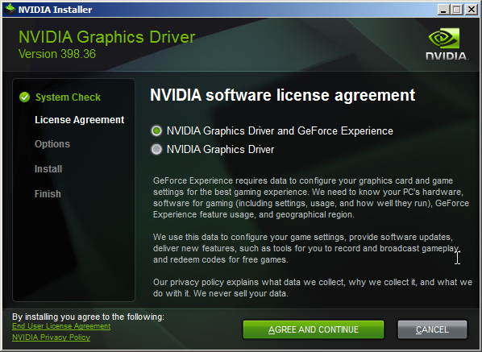
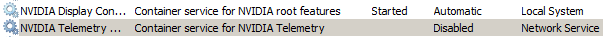
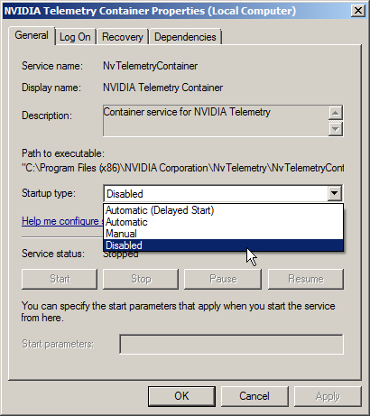

This article is about the graphics card driver software used for modern Nvidia graphics cards. It is not about any one specific driver.
Nvidia produces graphics cards, and of course to use this hardware you need to install their drivers. Unfortunately Nvidia's drivers are riddled with spyware and the installation process is a minefeild of serious privacy pitfalls, with options selected by default that have serious privacy implications they have if actually enabled. It isn't possible to install any of their drivers without bundled spyware being installed onto your computer, which needs to be cleaned up after the install.
When attempting to install an Nvidia graphics card driver you will be shown an option to install the spyware program GeForce Experience onto your computer. This program is malware that is also developed by Nvidia as well, and has a huge range of serious privacy issues, including scanning and uploading information about the files onto your comptuer to Nvidia. (An article about GeForce Experience is planned)
When the installation is finished, these services will show up (This is on windows 7):
These can at least be disabled like so:
Nvidia telemetry domains can also be blocked at the hosts file although these addresses are prone to change:
1.
Section 14 of the HTTP/1.1 Specification
[webarchive.loc.gov]
[web.archive.org]
[archive.is]
[webarchive.nrscotland.gov.uk]
[www.webcitation.org]
[arquivo.pt]
[veebiarhiiv.digar.ee]
[webarchive.proni.gov.uk]
This article was last edited on 7/22/2018
If you want to edit this article, or contribute your own article(s), contact us on XMPP over in spyware@conference.nuegia.net, or visit us at the git repo on Codeberg. All contributions must be licensed under the CC0 liscence to be accepted.